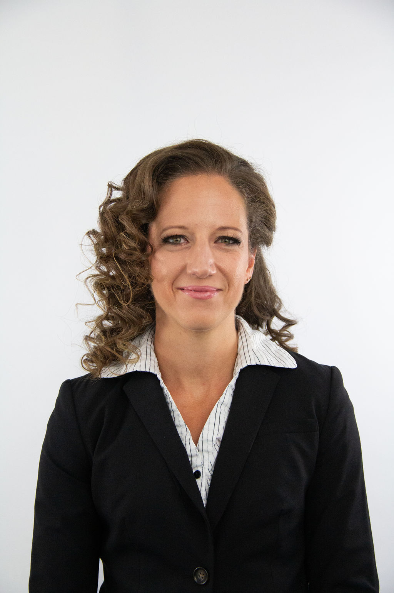

Meet the researchers

University of Calgary
Department of Economics
Lindsay is a Professor of Economics at the University of Calgary, where she has held faculty appointments since 2018. She holds a PhD in Economics from McMaster University and has held academic positions at the University of Victoria and the University of Manitoba. She served as Scientific Director of Fiscal and Economic Policy at the School of Public Policy from 2018 to 2023. Before entering academia, she held several posts with the Government of Canada in Ottawa and in municipal government, working in legal analysis, public economics, and policy implementation — experience that directly shapes her approach to research.
Her research spans tax policy design and implementation, municipal finance and fiscal federalism, property taxation, and the Marginal Value of Public Funds (MVPF). She takes a transdisciplinary approach that harnesses the strengths of economics, law, public administration, and intersectionality. She is a co-author of the leading Canadian public finance textbook Public Finance in Canada (now in its seventh edition), and her work has been published in the Canadian Tax Journal, Canadian Public Policy, Canadian Public Administration, and other leading outlets. Her co-authored book Basic Income and a Just Society ranked 6th on The Hill Times' 100 Best Books of 2023.
Lindsay has served on the BC Basic Income Expert Panel, chaired the BC MSP Task Force, sat on the City of Calgary's Financial Task Force and Housing and Affordability Task Force, and served as a Commissioner of the Ecofiscal Commission. She sat on the Deputy Prime Minister's Task Force for Women and the Economy and the Royal Society of Canada's Working Group on the Impacts of COVID-19 on Women in Canada — that report received an honourable mention for the 2023 Purvis Prize. She has appeared as an expert witness before House of Commons and Senate Standing Committees on multiple occasions.
She is a regular non-partisan public commentator, writing for the Globe and Mail, Macleans, and Policy Options, and appearing on television, radio, and podcasts. She is a recipient of the Queen's Platinum Jubilee Medal (Government of Alberta, 2022) and the Faculty of Arts Award for Public Engagement (University of Calgary, 2021).

University of Calgary
Department of Economics
Gillian is a Senior Research Associate in the Department of Economics at the University of Calgary, where she completed her PhD under Lindsay's supervision. She also holds a Juris Doctorate from Queen's University and an MA in Economics from Queen's, giving her a distinctive cross-disciplinary lens on how tax and social policy intersects with law and institutional design.
Her research focuses on cash transfer program design, benefit adequacy, income assistance reform, and disability policy. She was a key researcher for the BC Basic Income Expert Panel, producing a comprehensive body of commissioned research on poverty, system mapping, program interactions, and microsimulation. That work culminated in the co-authored book Basic Income and a Just Society (McGill-Queen's University Press, 2023), listed among the Hill Times' best books of 2023.
Gillian has led research for the Government of Nunavut, the City of Calgary, Canada Mortgage and Housing Corporation, the IRPP, Maytree, and multiple federal departments. She is a Policy Advisor at Maytree, a Fellow at Social Capital Partners, and a member of the Affordability Action Council. Her peer-reviewed work has appeared in Canadian Public Policy, Canadian Tax Journal, Poverty and Public Policy, and Canadian Public Administration.
She regularly provides policy advice to governments across Canada and appears on television, radio, and in print providing economic commentary on income security, taxation, and social policy.